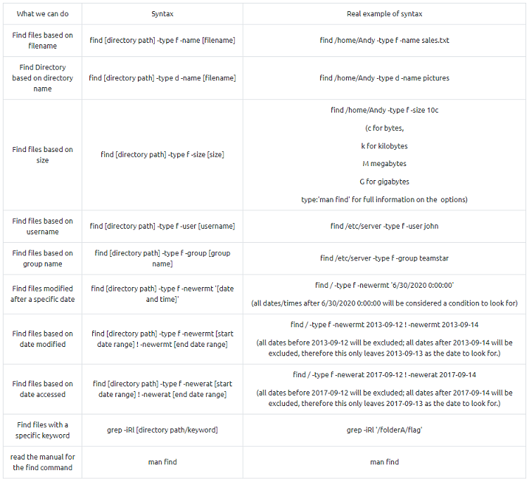

Linux Strength Training
- Finding your way around linux
- Finding specific files/folders on a system based on various conditions:
- 
- What is the correct option for finding files based on group
- -group
- What is format for finding a file with the user named Francis and with a size of 52 kilobytes in the directory /home/francis/
- find /home/francis -type f -user francis -size 52k
- SSH as topson using his password topson.
- Go to the /home/topson/chatlogs directory and type the following: grep -iRl 'keyword'.
- What is the name of the file that you found using this command?

- Type: less [filename] to open the file.
- Then, before anything, type / before typing: keyword followed by [ENTER].
- Notice how that allowed us to search for the first instance of that word in the entire document.
- For much larger documents this can be useful and if there are many more instances of that word in the document, we would be able to hit enter again to find the next instance in the document.
- What are the proceeding characters after the searched word you found?

- Read the file named 'ReadMeIfStuck.txt'. What is the Flag?
- just follow the instructions in each file
- . . .

- Working with files
- Hypothetically, you find yourself in a directory with many files and want to move all these files to the directory of /home/francis/logs
- What is the correct command to do this?
- mv * /home/francis/logs
- Hypothetically, you want to transfer a file from your /home/james/Desktop/ with the name script.py to the remote machine (192.168.10.5) directory of /home/john/scripts using the username of john.
- What would be the full command to do this?
- scp /home/james/Desktop/script.py john@192.168.10.5:/home/john/scripts
- How would you rename a folder named -logs to -newlogs
- mv -- -logs -newlogs
- How would you copy the file named encryption keys to the directory of /home/john/logs
- cp "encryption keys" /home/john/logs
- Find a file named readME_hint.txt inside topson's directory and read it.
- Using the instructions it gives you, get the second flag.
- one again just follow the instructions

- Hashing (introduction)
- Download the hash file attached to this task and attempt to crack the MD5 hash.
- What is the password?


- SSH as sarah using:
- sarah@[MACHINE:IP] and use the password: rainbowtree1230x
- What is the hash type stored in the file hashA.txt

- Crack hashA.txt using john the ripper, what is the password?

- What is the hash type stored in the file hashB.txt

- Find a wordlist with the file extention of '.mnf' and use it to crack the hash with the filename hashC.txt.
- What is the password?
-
- Sarah machine:
-
- Locate the wordlist by its extension: find / -type f -name "*.mnf" 2>>/dev/null
- Change dir: cd "/home/sarah/system AB/db"
- Move the wordlist: mv ww.mnf ~
- Run simple server: python3 -m http.server 8080
- Your machine:
-
- Transfer the wordlist: scp -p 8080 sarah@10.10.147.242:/home/sarah/ww.mnf .

-
- root@kali:~/Documents/THM# john --format=raw-sha256 --wordlist=ww.mnf hash
- Using default input encoding: UTF-8
- Loaded 1 password hash (Raw-SHA256 [SHA256 128/128 AVX 4x])
- Warning: poor OpenMP scalability for this hash type, consider --fork=2
- Will run 2 OpenMP threads
- Press 'q' or Ctrl-C to abort, almost any other key for status
- unacvaolipatnuggi (?)
- 1g 0:00:00:00 DONE (2020-12-12 04:07) 10.00g/s 2293Kp/s 2293Kc/s 2293KC/s trisyllabically..untent
- Use the "--show --format=Raw-SHA256" options to display all of the cracked passwords reliably
- Session completed
- Crack hashB.txt using john the ripper, what is the password?
-
- root@kali:~/Documents/THM# john --format=raw-sha1 --wordlist=/usr/share/wordlists/rockyou.txt hash
- Using default input encoding: UTF-8
- Loaded 1 password hash (Raw-SHA1 [SHA1 128/128 AVX 4x])
- Warning: no OpenMP support for this hash type, consider --fork=2
- Press 'q' or Ctrl-C to abort, almost any other key for status
- letmein (?)
- 1g 0:00:00:00 DONE (2020-12-12 04:10) 50.00g/s 25600p/s 25600c/s 25600C/s fuckyou1..letmein
- Use the "--show --format=Raw-SHA1" options to display all of the cracked passwords reliably
- Session completed
- Decoding base64
- What is the name of the tool which allows us to decode base64 strings?
-
- base64
- Find a file called encoded.txt.
- What is the special answer?

-
- Because of the last character we know the file is base64 encoded
- Decode the file: cat "/home/sarah/system AB/managed/encoded.txt" | base64 -d > decoded.txt

-
- Search for 'special': /special


-
- root@kali:~/Documents/THM# john --format=raw-md4 --wordlist=/usr/share/wordlists/rockyou.txt hash
- Using default input encoding: UTF-8
- Loaded 1 password hash (Raw-MD4 [MD4 128/128 AVX 4x3])
- Warning: no OpenMP support for this hash type, consider --fork=2
- Press 'q' or Ctrl-C to abort, almost any other key for status
- john (?)
- 1g 0:00:00:00 DONE (2020-12-12 04:48) 14.28g/s 98742p/s 98742c/s 98742C/s oblivion..better
- Use the "--show" option to display all of the cracked passwords reliably
- Session completed
- Encryption/Decryption using gpg
- Now try it for yourself.
- Make a random text file and enter some readable sentences in there before encrypting and decrypting it as illustrated above.
-
- touch test.txt
- echo 'Make a random text file and enter some readable sentences in' >> test.txt
- gpg --cipher-algo AES-256 --symmetric test.txt
- You wish to encrypt a file called history_logs.txt using the AES-128 scheme.
- What is the full command to do this?
-
- gpg --cipher-algo AES-128 --symetric history_logs.txt
- What is the command to decrypt the file you just encrypted?
-
- gpg history_logs.txt.gpg
- Find an encrypted file called layer4.txt, its password is bob.
- Use this to locate the flag. What is the flag?


- . . .

- . . .

-
- root@kali:~# echo "MS4gRmluZCBhIGZpbGUgY2FsbGVkIGxheWVyMS50eHQsIGl0cyBwYXNzd29yZCBpcyBoYWNrZWQu" | base64 -d
-
- Find a file called layer1.txt, its password is hacked.

- Cracking encrypted gpg files
- Encrypt a file and use a common password contained in the wordlist you wish to use.
- Follow the instructions above to decrypt as if you are a hacker.
- If it worked, well done.
-
- touch secret.txt
- echo "Secret message" >> secret.txt
- gpg --cipher-algo AES-256 --symmetric secret.txt
- gpg2john secret.txt.gpg > hash
- john --wordlist=/usr/share/wordlists/rockyou.txt --format=gpg hash
- Using default input encoding: UTF-8
- Loaded 1 password hash (gpg, OpenPGP / GnuPG Secret Key [32/64])
- Cost 1 (s2k-count) is 65011712 for all loaded hashes
- Cost 2 (hash algorithm [...]) is 2 for all loaded hashes
- Cost 3 (cipher algorithm [...]) is 9 for all loaded hashes
- Will run 2 OpenMP threads
- Press 'q' or Ctrl-C to abort, almost any other key for status
- password (?)
- 1g 0:00:00:00 DONE (2020-12-15 04:17) 1.785g/s 7.142p/s 7.142c/s 7.142C/s 123456789..password
- Use the "--show" option to display all of the cracked passwords reliably
- Session completed
- Find an encrypted file called personal.txt.gpg and find a wordlist called data.txt.
- Use tac to reverse the wordlist before brute-forcing it against the encrypted file.
- What is the the password to the encrypted file?
-
- type f -name personal.txt.gpg 2>>/dev/null
- /home/sarah/oldLogs/units/personal.txt.gpg
- find / -type f -name data.txt 2>>/dev/null
- /home/sarah/logs/zmn/old stuff/-mvLp/data.txt
- tac "/home/sarah/logs/zmn/old stuff/-mvLp/data.txt" > reverse.txt
- python3 -m http.server 8080
- In the browser on your machine navigate to: {MACHINE IP}:8080/

- Download personal.txt.gpg and reverse.txt
-
- gpg2john personal.txt.gpg > hash
- john --wordlist=reverse.txt --format=gpg hash
- Using default input encoding: UTF-8
- Loaded 1 password hash (gpg, OpenPGP / GnuPG Secret Key [32/64])
- Cost 1 (s2k-count) is 65011712 for all loaded hashes
- Cost 2 (hash algorithm [...]) is 2 for all loaded hashes
- Cost 3 (cipher algorithm [...]) is 9 for all loaded hashes
- Will run 2 OpenMP threads
- Press 'q' or Ctrl-C to abort, almost any other key for status
- valamanezivonia (?)
- 1g 0:00:02:34 DONE (2020-12-15 04:59) 0.006485g/s 7.796p/s 7.796c/s 7.796C/s vigliacca..valamanezivonia
- Use the "--show" option to display all of the cracked passwords reliably
- Session completed
- What is written in this now decrypted file?
-
- gpg --decrypt personal.txt.gpg

- Reading SQL databases
- Useful commands:
- service mysql start/stop
- mysql -u [username] -p -h [host ip]
- Open SQL database file locally:
- mysql -u [username] -p
- source [sql filename]
- Displaying the databases:
- SHOW DATABASES;
- Choosing a database to view:
- USE [database name]
- Displaying the tables in the selected database:
- SHOW TABLES;
- View the table structure of individual table:
- DESCRIBE [table name]
- Displaying all the data stored in a specific table:
- SELECT * FROM [table name]
- Find a file called employees.sql and read the SQL database.
- Find the flag contained in one of the tables.
- What is the flag?
-
- find / -type f -name employees.sql 2>>/dev/null
- /home/sarah/serverLx/employees.sql
- cd "/home/sarah/serverLx/"
- mysql -u sarah -p
- sarah:password
- source employees.sql
- * HINT: Look for someone with the first name of: Lobel
-
- SELECT * FROM employees WHERE first_name='Lobel';

-
- Final Challenge
- Go to the /home/shared/chatlogs directory and read the first chat log named: LpnQ.
- Use this to help you to proceed to the next task.
- next chatlog:

- another one:

- What is Sameer's SSH password?

-
- (screenshots of the three found chatlogs)
- What is the password for the sql database back-up copy
-
-
- cd /home/shared/sql/conf/
- find . -type f -size 50M
-
- ./JKpN
-
- less JKpN
-

-
-
- cat pLmjwi LmqAQl Ulpsmt > passwords
- python3 -m http.server 8080
- Download passwords file.
- Use less to view the file and search for words starting with 'ebq'.
- Try different one to see which one is the correct one for the sql database.

-
- Find the SSH password of the user James.
- What is the password?
-
- cd /home/shared/sql

-
- gpg --decrypt 2020-08-13.zip.gpg > backup.zip
- unzip backup.zip

- SSH as james and change the user to root?
- What is the root flag?

JOIN ROOM HERE: https://tryhackme.com/room/linuxstrengthtraining